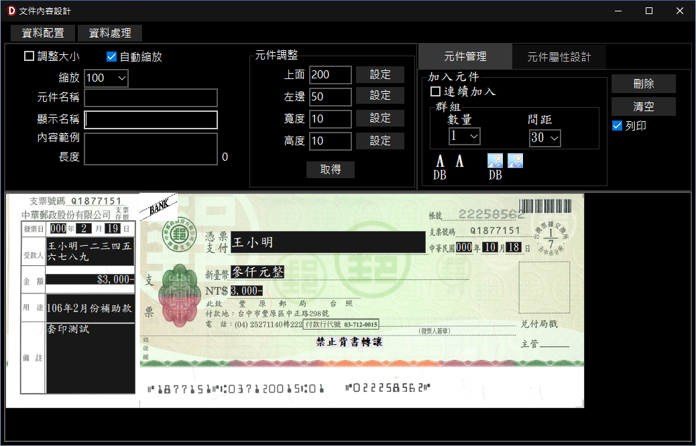

文件內容設計
文件的紀錄內容可以用視覺化的方式進行客制化的設計。可以用滑鼠直接移動或調整大小；文件紀錄類型及項目多寡，可以由使用者自由發揮。
元件項目是指文件上面的存放紀綠的內容(如字串或圖案)。

文件內容設計視窗
支援功能：
-
資料配置：
對使用者輸入（或匯入）的資料進行處理、配置，例如將日期分配給 3 個套印項目（年、月、日）。
-
資料處理：
對使用者輸入（或匯入）的資料進行處理，例如將日期切割為年、月、日，或將「1000」轉為「新臺幣壹仟元整」。
主要功能：
-
公用區：
- 調整紀錄元件的大小及名稱，字串類型項目的的範例內容。
- 備註：設計支票類型文件時，將「平行線」的顯示名稱設定為「CrossedCheck」，或「禁止背書轉讓」顯示名稱設定為「Nonnegotiable」，在軟體主視窗進行輸入資料時，就能能提供「平行線」及「禁止背書轉讓」的功能選項，讓使用者不需改變「文件內容設計」，就能決定是否套印「平行線」及「禁止背書轉讓」2個項目。
-
元件管理：
管理文件中的紀錄項目，可管理字串類型或圖案類型的紀錄項目。
- 字串類型項目：可以輸入文字、數字、符號等資料。
- 圖案類型項目：可以加入圖案。
-
元件屬性設計：
對字串類的紀錄項目進行字體大小、顏色、外框等設定，或對圖案類的紀錄項目指定圖案來源。